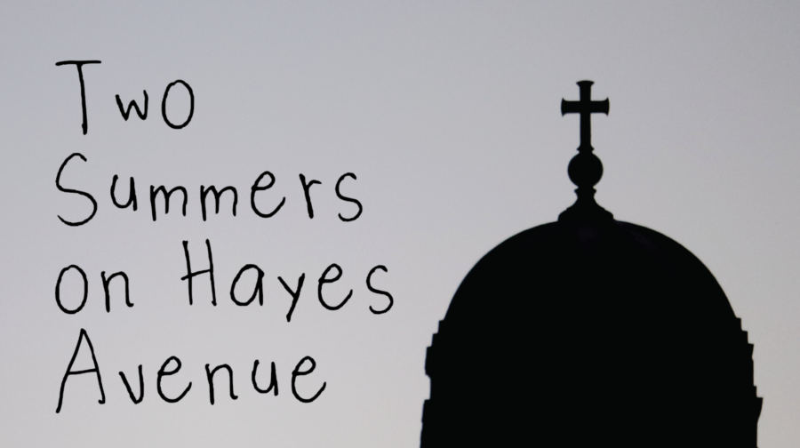

Two Summers on Hayes Avenue
Please RSVP to Attend: https://romansusan.org/Two-Summers
Join us for a screening of Two Summers on Hayes Avenue, a documentary examining the relationship between Rogers Park and Loyola University, looking to the future on how the university can better support the community, and how the community can better examine issues of gentrification and displacement in light of the current environment. A discussion will follow the screening.
Two Summers on Hayes Avenue is a project created by the production team of Tess Lacy, Lauren Sims, Elias Eshu, Emery Arevalo, Jo Swan, Nathan Yuen, Tenzin Chozom, and Dominic Bonelli, with Justin Anderson, Tara Lewis, Hnin Thazin, Soloman, Vince Ahmadi. Screening discussions are imagined in partnership with the ONE Northside housing justice team, as well as other organizations around the city working for tenants rights and fighting rising rents, and educators in local public schools.
This event is being hosted with ONE Northside, a mixed-income, multi-ethnic, intergenerational organization that unites diverse communities. ONE Northside builds collective power to eliminate injustice through bold and innovative community organizing. For more information, visit onenorthside.org.